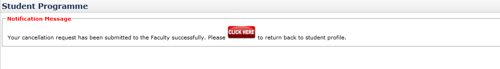
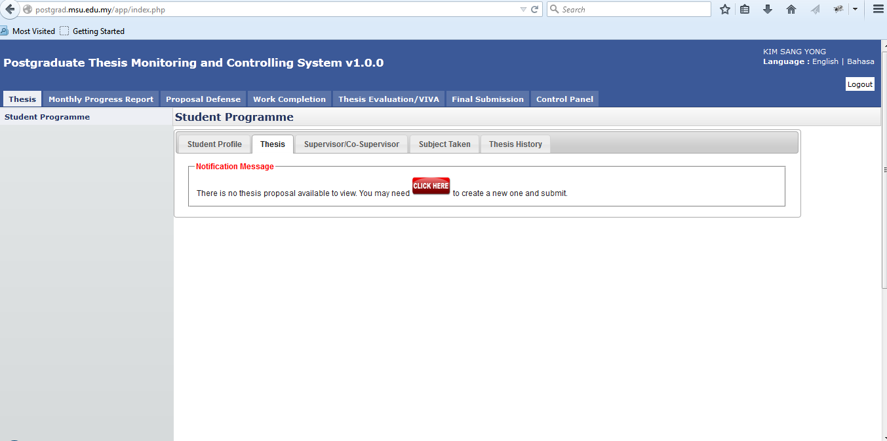
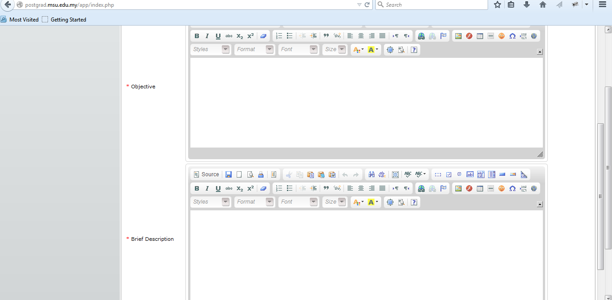
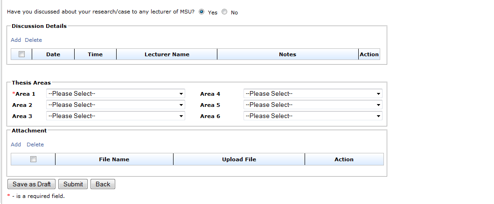
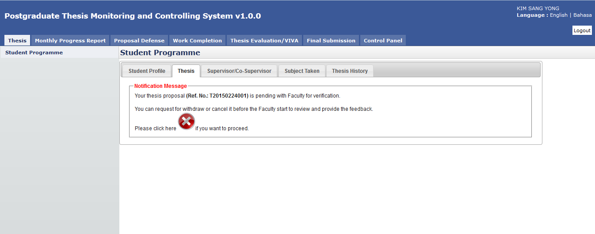
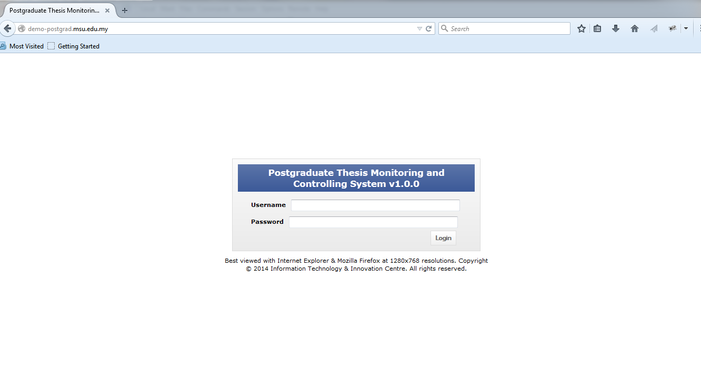
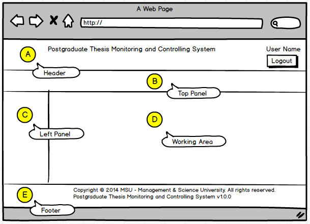

Management & Science University,
University Drive, Off Persiaran Olahraga,
Section 13, 40100 Shah Alam,
Selangor Darul Ehsan.
POSTGRAD THESIS MONITORING and CONTROLLING SYSTEM
(PGTMCS)
USER MANUAL for STUDENT
Version 1.0
Document Reference: MSU/PGTMCS/UM/001
DOCUMENT DETAILS
Effective Date:
|
1st April 2015
|
Document Owner:
|
Information Technology and Innovation Centre (ITIC)
|
REVISION HISTORY
Date
|
Version
|
Description
|
Author
|
18th February 2015
|
0.1
|
Document creation
|
Zuraimi, Amalina
|
02nd March 2015
|
0.2
|
Document review and update
|
Zuraimi
|
01st April 2015
|
1.0
|
Final
|
Zuraimi
|
TABLE OF CONTENTS
1 INTRODUCTION {p}
1.1 Scope {p}
1.2 System Requirement {p}
1.2.1 URL {p}
1.2.2 Internet Browser {p}
1.2.3 User Access {p}
1.3 Screen Design {p}
2 USER LOGIN and LOGOUT {p}
2.1 Login {p}
2.2 Logout {p}
3 CHANGE PASSWORD {p}
3.1 Change Password {p}
4 STUDENT PROGRAMME {p}
4.1 Student Profile {p}
4.2 Thesis {p}
4.3 Supervisor/Co-Supervisor List {p}
4.4 Subject Taken {p}
4.5 Thesis History {p}
5 SUBMIT NEW PROPOSAL {p}
5.1 First Time {p}
6 DISAPPROVE {p}
7 CANCEL PROPOSAL {p}
7.1 Request for Proposal Cancellation {p}
8 Approval from Faculty {p}
9 EDIT PROPOSAL {p}
9.1 Request Change {p}
10 VIEW PROPOSAL {p}
10.1 Approved {p}
10.2 Approved with Changes {p}
LIST OF FIGURES
Figure 1: PGTMCS Screen Structure Design........{p}
Figure 2: Login Page........{p}
Figure 3: Logout Page........{p}
Figure 4: Change Password Page........{p}
Figure 5: Student Programme Tab........{p}
Figure 6: List of Supervisor / Co-Supervisor........{p}
Figure 7: Subject Taken........{p}
Figure 8: First Time Proposal Preparation........{p}
Figure 9: New Proposal Page........{p}
Figure 10: New Proposal Page – Next Section........{p}
Figure 11: New Proposal Page – Next Section........{p}
Figure 12: New Proposal Page – Next Section........{p}
Figure 13: New Proposal Page – After submission........{p}
Figure 14: Proposal Disapproved by Faculty........{p}
Figure 15: Proposal Cancellation........{p}
Figure 16: Request for Cancellation........{p}
Figure 17: Request for Cancellation........{p}
Figure 18: Request for Cancellation........{p}
Figure 19: Request Changes – Edit Proposal........{p}
Figure 20: View Proposal – Approved by Senate........{p}
Figure 21: View Proposal – Approved with Changes by Senate........{p}
-
INTRODUCTION
Postgraduate Thesis Monitoring and Controlling System (PGTMCS) version 1.0.0 is a system for the Student, Supervisor, Faculty and Senate to monitor the status of thesis proposal from its initial stage toward to the end. It is not only use by the respective personnel to control and manage the quality of the thesis to meet the university standard but it also can be used to keep track all the communication between the student and university. If required the history can be retrieved to view the completed work or its progress.
The system contains the main modules which are Thesis Proposal Submission and Approval, Monthly Progress Report Review, Thesis Proposal Defense, Thesis Work Completion, Thesis Evaluation/Viva and Senate Endorsement.
The Thesis Proposal Submission and Approval module will be the first release made available for use by the student and staffs. The rest of the module will be released by stages.
-
Scope
As the scope of this manual will cover the first release of the module, it will guide the student how to use the system and what would they need to do in the case of proposal get approved, changes needed or disapproved by the faculty or senate.
The student also will know the status of the proposal for each of the proposal stage either in draft mode, pending decision or it has been confirmed / approved by the faculty / senate.
The remaining guideline for other modules will be updated in the next user manual release.
-
System Requirement
-
URL
The system is available over the internet via the URL http://postgrad.msu.edu.my and accessible only by the registered and authorized postgraduate student and respective MSU’s staff.
-
Internet Browser
It is recommended to run the system on the following internet browser
- Mozilla Firefox version 35 and above
- Microsoft Internet Explorer version 8 and above
-
User Access
The postgraduate student who has been successfully registered in Campus Management System (CMS) will be automatically become postgraduate user or otherwise the student needs to check with the CMS admin on his/her status. By default Student Matrix Number will be the user id to access the PGTMCS system.
The MSU’s staff that has been identified as reviewer, supervisor or co-supervisor can access the PGTMCS system once the PGTMCS admin registered him/her into the system. By default Employee ID will be the user id to access the PGTMCS system.
-
Screen Design
The PGTMCS system screen has been design into the 5 sections namely section A, B, C, D and E.
Section A to cater the PGTMCS Header in which it contains the name of the system, the user name and Logout button
Section B to cater the PGTMCS Top Panel in which it contains the list of functions for the system.
Section C to cater the PGTMCS Left Panel in which it contains the list of sub-functions resulting from the selection in Section B.
Section D to cater the PGTMCS Working Area in which it shows the page for user respond resulting from the selection in Section C.
Section E to cater the PGTMCS Footer in which it contains the university name and its copyright.
Figure 1: PGTMCS Screen Structure Design
-
USER LOGIN and LOGOUT
-
Login
This is the first page sight by the student to enter the PGTMC system.
Figure 2: Login Page
Steps:-
- Open any Internet Browser of your choice either Mozilla Firefox or Microsoft Internet Explorer
- Enter the URL to access the system as follows http://postgrad.msu.edu.my/
- Login page will be displayed in which the valid user credential needs to be provided i.e. Username and Password.
-
Logout
Once the necessary or required activities has been done or completed, the student can quit from the system by clicking on the Logout button.
If the system is keep idle for about 1 minute, the system will logged out the user automatically.
Figure 3: Logout Page
Steps:-
- Find the Logout button located on the right top corner of the system Header section.
- Click on it and you will be logout from the system successfully.
-
CHANGE PASSWORD
-
Change Password
For the security reason, the user is strongly recommended to change the password at first successful login to the system.

Figure 4: Change Password Page
Steps:-
- Click on the Control Panel tab from the system Top panel section.
- The Change Password menu will be displayed and click on it.
- As to ensure the right user able to change the password, the system will ask Current Password used before able to change it to the new password.
- Once the Current Password has been provided, the New Password and Verify Password can be provided afterward.
- Click Change Password button to ensure the new password can be saved into the system successfully.
- If the Current Password is incorrect, the system will prompt an error message and the user needs to redo the same steps above.
- User can use Reset button if wanted to clear the entry on each fields.
-
STUDENT PROGRAMME
Student Programme will contain all information that related to students, which are Student Profile, Thesis, Supervisor/Co-supervisor lists, Subject Taken and Thesis History.
-
Student Profile
Student Profile tab contains the basic student and thesis information including its thesis progress status.

Figure 5: Student Programme Tab
Steps:-
- Click on the Thesis tab on the system Top panel section.
- The Student Programme menu will be displayed on the system Left panel and click on it.
- The other 5 tabs will be displayed on the Working Area section in which each tab will contain the information as mentioned previously.
-
Thesis
Thesis tab is the page where the student can submit, amend and view the proposal. Please refer next sections for details steps.
-
Supervisor/Co-Supervisor List
Supervisor or Co-Supervisor is the academic staff who has been assigned by Faculty to supervise the student in delivering the thesis and approved by the Senate.
There are conditions for the student to see the list of his/her supervisors. The conditions are:-
- Supervisor/Co-Supervisor has been assigned by Faculty and approved by the Senate
- Supervisor/Co-Supervisor has accepted the appointment to supervise the student.

Figure 6: List of Supervisor / Co-Supervisor
Steps:-
- Click on the Thesis tab on the Top panel
- Click on the Student Programme menu on the Left panel
- Click on the Supervisor/Co-Supervisor tab on the Working Area
- System will display the list of the supervisor/co-supervisor which has been assigned and approved by Senate.
-
Subject Taken
Subject Taken tab will list the entire subject registered by the students for all semester during his study.
Figure 7: Subject Taken
Steps:-
- Click on the Thesis tab on the Top panel
- Click on the Student Programme menu on the Left panel
- Click on the Subject Taken tab on the Working Area
- System will display the list of the subject taken by the student from his/her first semester till current.
-
Thesis History
Thesis History tab contains the proposal progress history starting from its submission by the student till its approval by the Senate. It captures the date of

Figure 1.9
Steps:-
- Click on the Thesis tab on the Top panel
- Click on the Student Programme menu on the Left panel
- Click on the Thesis History tab on the Working Area
- System will display the list of the thesis history starting from its submission till its approval.
-
SUBMIT NEW PROPOSAL
-
First Time
When first time login to the system, the user will see the message from the system as shown in the figure below asking for proposal preparation and submission to the Faculty.

Figure 8: First Time Proposal Preparation
Steps:-
- Click on the Thesis Tab on the Top Panel.
- System will show the message to prepare and submit the proposal.
- Click on the Click Here button to create the proposal.

Figure 9: New Proposal Page
- Enter the Thesis / Project Title
- Select Proposal Type
- Enter the necessary description into the Introduction

Figure 10: New Proposal Page – Next Section
- Enter the necessary description into the Objective
- Enter the necessary description into the Brief Description

Figure 11: New Proposal Page – Next Section
- By default it will be set as ‘Yes’ for the discussion with the MSU’s lecturer. The meeting date and its detail can be added via Add button.
- At least 1 Thesis Areas need to be selected for Faculty to select and assign the right and suitable supervisor/co-supervisor to consult with the student.
- The student also can input as many attachments to support the thesis proposal.

Figure 12: New Proposal Page – Next Section
- After all the necessary information has been provided, the student can save it temporarily via Save as Draft button in case there is a need to be reviewed and updated later. Once finalize, it can be submitted to the Faculty and Senate for approval and becomes a thesis.
- Click Back button if to return back to Student Programme page.
- If the proposal has been finalized and ready to submit for approval, the student can send it to Faculty via Submit button. Any changes cannot be done until the proposal is returned back by Faculty due to any changes needed.

Figure 13: New Proposal Page – After submission
- After submit, system will notify student that their proposal has been successfully submitted to the Faculty for approval.
- If the student has changed his/her mind to withdraw or cancel the newly submitted proposal, he/she can do that via cancel button
 as shown above. Please refer next section on how to cancel the proposal.
as shown above. Please refer next section on how to cancel the proposal.
-
DISAPPROVE
If there is a case where the thesis proposal does not meet the expectation of the Faculty or the content does not fit the title, the proposal may be rejected or disapproved by the Faculty.
For this scenario, the system will notify the student on the proposal status.

Figure 14: Proposal Disapproved by Faculty
Steps:-
- After the proposal has been submitted to the Faculty, the Faculty will review it and determine its status. In case the proposal gets rejected due to some reason, the student can check it via Thesis tab.
- Click Thesis tab on Top panel
- Click on the Student Programme on the Left panel
- Click on the Thesis Tab on the Working Area section.
- The system will show the proposal status and the student can read the Remarks and download the Attachment from Faculty (if any).
- For this case, the student can amend the proposal according to the advice given by the Faculty.
- Click on the Click Here button to proceed and resubmit.
-
CANCEL PROPOSAL
-
Request for Proposal Cancellation
Student is allowed to cancel his/her newly submitted proposal in case he/she realizes some amendment need to be done. For this case the student can request for proposal cancellation as shown below.

Figure 15: Proposal Cancellation
Steps:-
- Click on the Thesis tab on the Top panel
- Click on the Student Programme menu on the Left panel
- Click on the Thesis tab on the Working Area
- System will display the notification message to the student indicate that the proposal has been successfully submitted to the Faculty.
- If the student decided to cancel the proposal, he/she can click on the
 cancel button. Please note the cancellation only can be done if the Faculty is not yet provide the feedback.
cancel button. Please note the cancellation only can be done if the Faculty is not yet provide the feedback.
Figure 16: Request for Cancellation
- The student needs to provide the justification of the cancellation and once confirm click the Request for Cancellation button.
- Otherwise the student can click Back button and wait feedback from the Faculty and Senate.

Figure 17: Request for Cancellation
- The above message will be displayed after the student submits the cancellation request to the Faculty.
-
Approval from Faculty
Once the Faculty approve the proposal cancellation request, the student can see the notification message from the system as shown below.

Figure 18: Request for Cancellation
Steps:-
- Click on the Thesis tab on the Top panel
- Click on the Student Programme menu on the Left panel
- Click on the Thesis tab on the Working Area
- System will display the notification message to the student indicate that the proposal cancellation request has been approved by the Faculty.
- As such the student can open back the proposal via Click Here button and amend it accordingly.
- The student can resubmit the proposal once the changes has been incorporated and finalized.
-
EDIT PROPOSAL
-
Request Change
If there is a case where the thesis proposal needs some changes, the Faculty will return it back to the student to amend and resubmit it.
For this scenario, the system will notify the student on the proposal status.

Figure 19: Request Changes – Edit Proposal
Steps:-
- After the proposal has been submitted to the Faculty, the Faculty will review it and determine its status. In case the proposal need some changes, the student can check it via Thesis tab.
- Click Thesis tab on Top panel
- Click on the Student Programme on the Left panel
- Click on the Thesis Tab on the Working Area section.
- The system will show the proposal status and the student can read the Remarks and download the Attachment from Faculty (if any).
- For this case, the student can amend the proposal according to the advice given by the Faculty.
- Click on the Click Here button to change and resubmit it.
-
VIEW PROPOSAL
-
Approved
The student can view back the proposal once it has been approved by the Senate.
Figure 20: View Proposal – Approved by Senate
Steps:-
- Click on the Thesis tab on the Top panel
- Click on the Student Programme menu on the Left panel
- Click on the Thesis tab on the Working Area
- System will display the notification message to the student indicate that the proposal has been approved by the Faculty and Senate.
- The student can proceed with the monthly progress report preparation via Click Here button
 .
.
- Or the student can view the approved proposal via the click here button No amendment is allowed on this view.
-
Approved with Changes

Figure 21: View Proposal – Approved with Changes by Senate
Steps:-
- Click on the Thesis tab on the Top panel
- Click on the Student Programme menu on the Left panel
- Click on the Thesis tab on the Working Area
- System will display the notification message to the student indicate that the proposal has been approved (with changes) by the Faculty and Senate.
- The student can proceed with the monthly progress report preparation via Click Here button
 .
.
- Or the student can view the approved proposal via the click here button  No amendment is allowed on this view.
Created with the Personal Edition of HelpNDoc: Free help authoring tool